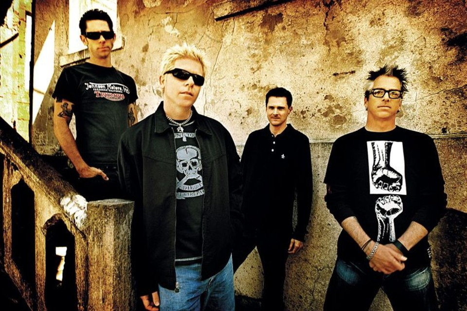
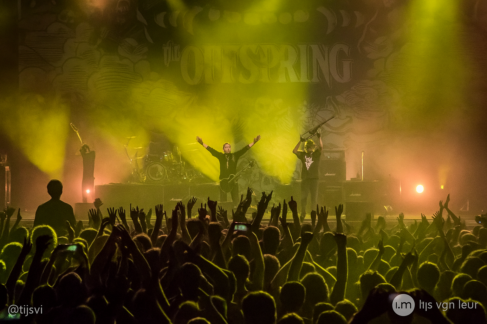

Uma banda de rock formada na Califórnia

Em 1984, os adolescentes Dexter Holland e Greg K., que eram colegas de ginásio em Hutington Beach, resolveram formar uma banda após saírem de um concerto da banda de projeção local, Social Distortion.
Mais tarde, Kevin "Noodles" Wasserman foi chamado para banda pelo seu infame talento de conseguir bebidas alcoólicas para os integrantes da banda, na época menores de idade.
Tocando sob o nome de Manic Subsidal, em 1985 a banda decide trocar de nome para The Offspring. Seu primeiro single, "i'll Be Waiting/Blackball", foi lançado no formato de vinil pela gravadora independente Black Label Records e teve tiragem de mil cópias.
Seu álbum de estreia, The Offspring, foi lançado pela gravadora independente Nemessis Records 1989 e produzido por Thom Wilson, vendendo três mil cópias dessa estreia em vinil.
"Vender mais de 10 milhoes de álbuns não é a prioridade, lançar algo que nos orgulhamos que é."
Dexter Holland
"Chances thrown
Nothing's free
Longing for what used to be
Still, it's hard
Hard to see
Fragile lives, shattered dreams"
The Offspring - The kids aren't alright

Você pode conhecer mais sobre a banda clicando aqui